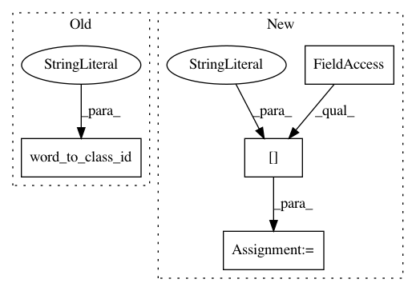

80d6b65bb6df4ca500769f195d13de8fa125c611,wordclasses/wordstatistics.py,WordStatistics,__init__,#WordStatistics#Any#Any#Any#,12
Before Change
vocabulary_size = vocabulary.num_words()
sos_class_id = vocabulary.word_to_class_id("<s>")
eos_class_id = vocabulary.word_to_class_id("</s>")
unk_class_id = vocabulary.word_to_class_id("<unk>")
self.unigram_counts = numpy.zeros(vocabulary_size, count_type)
self.bigram_counts = dok_matrix(
(vocabulary_size, vocabulary_size), dtype=count_type)
After Change
vocabulary_size = vocabulary.num_words()
sos_id = vocabulary.word_to_id["<s>"]
eos_id = vocabulary.word_to_id["</s>"]
unk_id = vocabulary.word_to_id["<unk>"]
self.unigram_counts = numpy.zeros(vocabulary_size, count_type)
self.bigram_counts = dok_matrix(
In pattern: SUPERPATTERN
Frequency: 3
Non-data size: 4
Instances
Project Name: senarvi/theanolm
Commit Name: 80d6b65bb6df4ca500769f195d13de8fa125c611
Time: 2016-04-15
Author: seppo.git@marjaniemi.com
File Name: wordclasses/wordstatistics.py
Class Name: WordStatistics
Method Name: __init__
Project Name: senarvi/theanolm
Commit Name: 0375cb0a69852f21f19c8568b4a37128d4407fc0
Time: 2016-04-12
Author: seppo.git@marjaniemi.com
File Name: theanolm/textsampler.py
Class Name: TextSampler
Method Name: generate
Project Name: senarvi/theanolm
Commit Name: 12a20eae55a9fca88a3be7eda49724884f60f357
Time: 2016-04-19
Author: seppo.git@marjaniemi.com
File Name: theanolm/commands/score.py
Class Name:
Method Name: _score_utterances